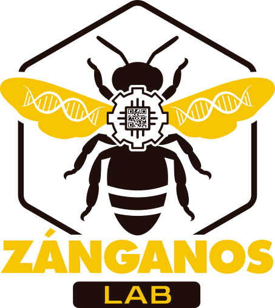

Apóyenos
Las abejas no pueden hablar. Su donación, sí.
Somos un laboratorio de investigación del IER–CONICET (Tucumán) que estudia a los zánganos de Apis mellifera: su genética, su comportamiento y su papel en la salud de las colmenas. Con RFID, códigos QR, drones, sensores y genética mapeamos las áreas de congregación de zánganos para entender por qué las colmenas prosperan… o colapsan.
Puede ayudarnos con el monto que pueda. Las donaciones se reciben a través de la plataforma ayudar.ar.
Donar en ayudar.ar ↗
¿Para qué usamos su aporte?
Un código QR y los reactivos para analizar el ADN de un zángano.
Mantener durante un mes un sensor de la Colmena sensorizada transmitiendo datos.
El combustible de una jornada de campo para revisitar un área de congregación.
Los viáticos de un/a estudiante o pasante durante un mes.
Cada tres meses compartimos un boletín con los avances en esta página y en Instagram.
Otras formas de ayudar
Comparta nuestra página
Descargue nuestro logo con código QR para usarlo en presentaciones, pósters o folletos. Para que se pueda escanear, imprímalo con al menos 12 cm de ancho.


Colabore con nosotros
Si es investigador, estudiante, apicultor o forma parte de una institución, podemos trabajar juntos.
Gracias por apostar por la ciencia y por las abejas.
Donar ahora ↗